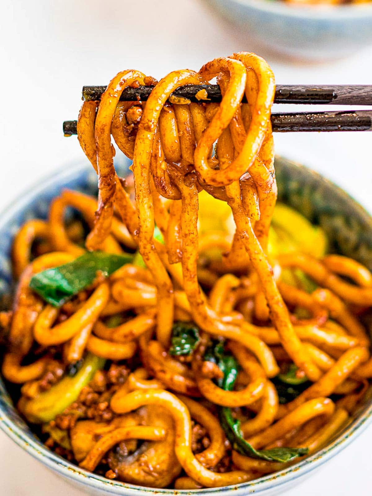

Yaki Udon Recipe

Description
A stir fried noodle dish using udon noodles and vegetables of your choice along with a sauce.
Ingredients
- Udon Noodles
- Ground Meat of Your Choice (Chicken, Turkey, Beef, Pork etc.)
- Bell Pepper
- Onions
- Mushrooms
- BBQ Sauce
Steps
- Cook your udon noodles to package directions
- Brown your ground meat
- Stir fry your vegetables until tender
- Add your noodles and sauce and continue to stir fry until well combined